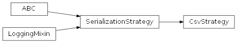
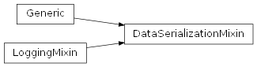
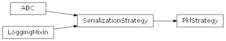
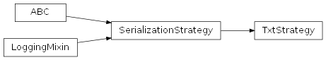

SentimentAnalysis.src.serialization package
Submodules
SentimentAnalysis.src.serialization.csv_strategy module
csv_strategy.py
Version 1.0, updated on 2025-05-01
- class SentimentAnalysis.src.serialization.csv_strategy.CsvStrategy(file: File | None = None)[source]
Bases:
SerializationStrategyThis class is a concrete implementation of the SerializationStrategy interface for handling CSV files. It is used for the serialization and deserialization of pandas DataFrames to and from CSV format.
- DATA_STRUCTURE
The data structure type this strategy can serialize and deserialize.
- Type:
str
- FILE_TYPE
The file type this strategy uses to serialize and deserialize data. This string is used in log messages.
- Type:
str
- file
Inherited from the SerializationStrategy interface. Represents the CSV file to be serialized or deserialized.
- Type:
File | None
- separator
The delimiter to use in the CSV file. This is configurable through settings.
- Type:
str
- _load() DataFrame:[source]
Deserializes and loads data from a CSV file into a DataFrame. If the file does not exist, returns None.
Notes
The path where the CSV file is saved or loaded from is determined by settings specific to the CSV strategy.
The separator used in the CSV file can also be configured through settings, allowing for flexibility in handling different CSV formats.
- DATA_STRUCTURE: str = 'DataFrame'
- FILE_TYPE: str = 'CSV'
- __init__(file: File | None = None) None[source]
Initializes a new instance of the CsvStrategy class.
Sets the file path and the separator to use, retrieving them from the application settings.
- Parameters:
file (File | None) – Custom ‘File’ object used for saving or loading data or removing a file from the file system. The ‘File’ object holds attributes detailing the name and extension of the file which is concerned by the intended file operations. If not provided, operations will require a file to be set later.
- _add(data: DataFrame) None[source]
Attempts to add the given dataframe to an existing CSV file.
- Parameters:
data (DataFrame) – The DataFrame to be serialized and saved to a CSV file.
- _load() DataFrame | None[source]
Attempts to load data from a CSV file into a DataFrame.
- Returns:
The deserialized DataFrame if the file exists; otherwise, None.
- Return type:
DataFrame | None
- _save(data: DataFrame) None[source]
Attempts to save the given dataframe to a CSV file.
- Parameters:
data (DataFrame) – The DataFrame to be serialized and saved to a CSV file.
- property separator: str
Gets the separator to be used in the CSV file.
- Returns:
The delimiter to use in the CSV file.
- Return type:
str
SentimentAnalysis.src.serialization.data_serialization_mixin module
data_serialization_mixin.py
Version 1.0, updated on 2025-05-01
This module provides a mixin class for data serialization, offering methods to load, save, fetch and manage data with flexible authentication strategies.
- class SentimentAnalysis.src.serialization.data_serialization_mixin.DataSerializationMixin[source]
Bases:
Generic[T],LoggingMixinDataSerializationMixin class.
This mixin provides serialization capabilities for data. It provides methods to load, save and fetch data from various sources.
It also serves as the context in a strategy pattern, allowing you to dynamically choose an authentication strategy at runtime for accessing specified online data sources.
The mixin works with any authentication strategy that implements the AuthenticationStrategy interface, giving access to the authentication functionality of the given authentication strategy.
- auth_strategy
The authentication strategy used to access the data.
- Type:
- source
The source from which the data can be fetched, typically a URL.
- Type:
str
- file_type
The type of file used for storing the data, e.g., ‘csv’, ‘json’, ‘txt’.
- Type:
str
- file_name
The name of the data file, excluding the file extension.
- Type:
str
- sub_dir
The subdirectory where the data file is stored.
- Type:
str
- original_file_name
The original file name to use for fetching data, defaulting to the value of file_name if not explicitly set.
- Type:
str
- serializer
The serializer instance used for data serialization and deserialization.
- Type:
- add_or_save() None:[source]
Saves the data locally, adding it to an existing file or saving it as a new file.
- authenticate() None:[source]
Authenticates the user with the given authentication strategy when fetching data from the online source.
- fetch() None:[source]
Fetches the data from the original online source, using the selected authentication strategy.
- load() None:[source]
Loads the data from the local storage, raising a ValueError if the loading fails.
- load_if_possible() None:[source]
Loads the data from the local storage if available, without attempting to fetch or save it.
- load_or_fetch_and_save() None:[source]
Tries to load the data from the local storage. If the data is not found locally, fetches it from its online source and saves it locally.
- _load_from_cache() bool[source]
Load existing data from the cache if it is still valid.
- Returns:
True if the data was loaded from the cache, False otherwise.
- Return type:
bool
- add_or_save() None[source]
Saves the data locally.
Saves the data locally, adding it to an existing file or saving it as a new file.
- property auth_strategy: AuthenticationStrategy | NoAuthenticationStrategy | None
Returns the authentication strategy used to access the data.
- authenticate() None[source]
Authenticates with the authentication strategy.
Authenticates with the authentication strategy if it is an instance of AuthenticationStrategy.
- Raises:
CriticalException – If the authentication strategy is not set.
Notes
If the authentication strategy is an instance of NoAuthenticationStrategy, no authentication is performed.
- property authenticator: Authenticator
Provides lazy initialization for the authenticator instance to use for authentication.
- can_load() bool[source]
Checks if the data can be loaded from the local storage location.
- Returns:
True if the data can be loaded, False otherwise.
- Return type:
bool
- fetch() None[source]
Fetch data from the original source.
This method uses the methods of the authentication strategy to authenticate the user and fetch the data from the original source.
- Raises:
CriticalException – If the source is not set in this class.
Exception – If any other exception occurs when trying to fetch and save data from the original source.
Notes
The fetched data is not returned but stored in the data structure of the object this mixin is attached to.
- property file_name: str
Returns the file name of the data.
The file name is a string describing the name of the data file without the file extension.
- property file_type: str
Returns the file type of the data.
The file type is a string describing the format of the data, e.g. ‘csv’, ‘json’, ‘txt’.
- load() None[source]
Loads the data from the cache or the local storage.
Loads the data from the local storage if not already loaded and still valid.
The loaded data is stored in the data structure of the object this mixin is attached to using the object’s ‘data’ setter.
- Raises:
CriticalException – If the data could not be loaded from cache or the local storage.
Notes
As a precondition, the self_attribute_chain_not_none decorator is used to ensure that the serializer provides a file path for the load process.
The _load() method is used to allow for the output_not_none_or_empty decorator to check the data exists before assigning it to self.data.
The loading process will result in a data structure defined by the serialization strategy. As the data needs to be wrapped in the object this mixin is attached to, it is up to the ‘data’ setter of the object to convert the data to the correct type.
- load_if_possible() None[source]
Loads the data from their local storage location.
If the data is not found locally, this method will do nothing, leaving it to the caller to decide how to proceed further.
Notes
The loaded data is not returned but stored in the data structure of the object this mixin is attached to.
- load_or_fetch_and_save() None[source]
Loads the data from their local storage location.
If the data is not found locally, this method will call the ‘fetch’ method to fetch the data from its online source and save it locally.
The loaded data will be stored in the data structure of the object this mixin is attached to.
- property original_file_name: str
Returns the original file name of the data.
Returns the file name which is to be used for fetching the data. If no special original file name is set, the normal file name is used.
The file name is a string describing the name of the data file without the file extension.
- save() None[source]
Saves the data locally and invalidates the cache.
Saves the data locally and invalidates the cache to ensure new data is reloaded from disk.
- Raises:
CriticalException – If the file path is not set.
- property serializer: Serializer
Provides lazy initialization for the serializer instance to use for serialization.
- property source: str
Returns the source of the data.
The source is an external link to the data, e.g. an Url from which the data can be downloaded.
- property sub_dir: str
Returns the subdirectory for the data.
SentimentAnalysis.src.serialization.directory module
directory.py
Version 1.0, updated on 2025-05-01
- class SentimentAnalysis.src.serialization.directory.Directory(path: str)[source]
Bases:
objectDirectory class.
This class provides properties and methods for accessing a specified directory and the files its contains.
- file_names
All file_names in the directory.
- Type:
List[str]
- path
The path of the directory, including the directory’s name.
- Type:
Path
- get_file_names_by_string(string: str) List[str]:[source]
Returns file names in the directory that contain the given string.
- __init__(path: str)[source]
Constructor.
Initializes the Directory class with a given path.
- Parameters:
path (str) – The directory’s path as a string.
- property file_names: List[str]
Returns all file_names in the directory.
- Returns:
A list of all file names in the directory.
- Return type:
List[str]
- get_file_names_by_string(string: str) List[str][source]
Returns file names in the directory that contain the given string.
- Parameters:
string (str) – The string the file names must contain.
- Returns:
A list of file names that contain the specified string.
- Return type:
List[str]
- property path: Path
Gets the path of the directory, including the directory’s name.
- Returns:
The directory’s path.
- Return type:
Path
SentimentAnalysis.src.serialization.directory_factory module
directory_factory.py
Version 1.0, updated on 2024-09-19
This module provides a factory for creating and managing directories within the project’s data folder. It defines a ‘DirectoryFactory’ class that helps create or initialize specific subdirectories for storing files, and ensures that these directories exist in the file system. The module also includes a utility function for path validation.
Classes
DirectoryFactory(LoggingMixin)
- class SentimentAnalysis.src.serialization.directory_factory.DirectoryFactory[source]
Bases:
LoggingMixinDirectoryFactory class
Factory class for creating and managing directory structures within the project’s data folder. It provides static methods to create or initialize specific subdirectories and ensure their paths exist. The class utilizes the ‘Directory’ class to encapsulate directory details and operations.
Inherits
LoggingMixin : Mixin class to provide logging functionality.
- create(file_extension: str, sub_dir_name: str) Directory:[source]
Creates and returns a ‘Directory’ instance for an existing subdirectory.
- make(file_extension: str, sub_dir_name: str) Directory:[source]
Creates the specified subdirectory in the file system and returns a ‘Directory’ instance.
- static create(file_extension: str, sub_dir_name: str) Directory[source]
Creates a Directory instance for a subdirectory in the data directory.
Creates a Directory instance for a subdirectory in the data directory of this project from a given file_extension and a subdirectory name.
Ensures the path of the Directory exists by calling the check_path function, which will raise a FileNotFoundError if the path is incorrect.
- Parameters:
file_extension (str) – The file extension of the files the directory is supposed to store.
sub_dir_name (str) – The name of the subdirectory.
- Returns:
An instance of the Directory class with the path property set.
- Return type:
- static make(file_extension: str, sub_dir_name: str) Directory[source]
Creates the specified data subdirectory.
Creates the specified data subdirectory in the file system and creates a corresponding Directory instance. The directory path is composed of the DATA_ROOT specified in the settings, the file_extension serving as the data subfolder name and the sub_dir_name that is to be used for the subdirectory that is to bbe placed within this data subfolder.
Ensures the path was successfully created by calling the check_path function, which will raise a FileNotFoundError if the path was not created.
- Parameters:
file_extension (str) – The file extension of the files the directory is used to store.
sub_dir_name (str) – The name of the subdirectory.
- Returns:
An instance of the ‘Directory’ class representing the newly created subdirectory.
- Return type:
- SentimentAnalysis.src.serialization.directory_factory.check_path(path: str) None[source]
Validates the existence of a given file path.
This function checks whether a provided file path exists. If the path is invalid or does not exist, it logs an error message and raises a FileNotFoundError.
- Parameters:
path (str) – The file path to validate.
- Raises:
FileNotFoundError – If the specified path does not exist.
SentimentAnalysis.src.serialization.file module
file.py
Version 1.0, updated on 2025-05-01
- class SentimentAnalysis.src.serialization.file.File(file_name: str, extension: FileExtension)[source]
Bases:
objectFile class.
This class provides an object containing the details of a file.
To initialize the File object, you need to specify the file’s name and extension.
- file_name
The name of the file without its extension and path.
- Type:
str
- extension
The extension of the file (an enum value from a list of possible extensions).
- Type:
- path
The absolute path to the file. In contrast to the full_path, the path does not include the file’s name and extension.
- Type:
str
- full_path
The full absolute path of the file, consisting of the path property value and the file’s name and extension.
- Type:
str
Notes
The path, defined as the directory’s absolute path containing the file, is not initially set to allow for dynamic assignment based on varying conditions. Once the path is established, the object offers a method to retrieve the complete file path, incorporating both the file name and its extension.
Implementation Details
The class uses a logger for logging warnings and errors related to file path operations.
- __init__(file_name: str, extension: FileExtension) None[source]
Constructor.
Initializes the File with the given parameters.
- Parameters:
file_name (str) – The name of the file without its extension and path.
extension (FileExtension) – The extension of the file as an enum value from the list of possible extensions enumerated in the FileExtension class).
- _remove_extension(file_name: str) str[source]
Removes the defined extension from the file name.
Removes the extension defined in the extension property from the file name.
- Parameters:
file_name (str) – The name of the file.
- Returns:
The name of the file without the extension.
- Return type:
str
Notes
If the extension is an empty string, the file name is returned unchanged.
- property extension: FileExtension
Returns the extension of the file.
- property file_name: str
Gets the name of the file.
- property full_path: str
Returns the full path of the file.
The full path consists of the path, the file’s name and extension.
- Returns:
self.__full_path – The full path of the file
- Return type:
str
Notes
If the __compose_full_path method fails, this getter will fail gracefully, returning None. The calling method will have to check whether the full path returned actually has a value.
- property path: str
Returns the path of the file.
- Returns:
self.__path – The path of the file
- Return type:
str
Notes
The path might not be set, so that this getter might return an empty string. It is up to the calling method to check if the return value is valid.
SentimentAnalysis.src.serialization.file_extension module
file_extension.py
Version 1.0, validated on 2024-09-10
This module provides an exhaustive list of file extensions that this project knows to handle. It is mainly called by the settings and the file and serialization classes. Add more extensions to the list, as you add new classes and methods to support more extensions within the project.
- class SentimentAnalysis.src.serialization.file_extension.FileExtension(value, names=<not given>, *values, module=None, qualname=None, type=None, start=1, boundary=None)[source]
Bases:
StrEnumFileExtension class.
This class provides string constants (str) for file extensions.
- CSV = '.csv'
- JSON = '.json'
- JSONL = '.jsonl'
- LOG = '.log'
- PKL = '.pkl'
- TXT = '.txt'
- XLS = '.xls'
- XLSX = '.xlsx'
- static _generate_next_value_(name, start, count, last_values)
Return the lower-cased version of the member name.
SentimentAnalysis.src.serialization.json_strategy module
json_strategy.py
Version 1.0, updated on 2025-05-01
- class SentimentAnalysis.src.serialization.json_strategy.JsonStrategy(file: File | None = None)[source]
Bases:
SerializationStrategyJsonStrategy class.
This class is a concrete implementation of the SerializationStrategy interface for handling JSON files. It is used for the serialization and deserialization of dictionaries to and from JSON format.
- DATA_STRUCTURE
The data structure type this strategy can serialize and deserialize.
- Type:
str
- FILE_TYPE
The file type this strategy uses to serialize and deserialize data. This string is used in log messages.
- Type:
str
- file
Inherited from the SerializationStrategy interface. Represents the JSON file to be serialized or deserialized.
- Type:
File | None
- _load() DataFrame | str | Dict | List[List[Any]] | None:[source]
Deserializes and loads data from a JSON file. If the file does not exist, returns None.
- DATA_STRUCTURE: str = 'dictionary'
- FILE_TYPE: str = 'JSON'
- __init__(file: File | None = None) None[source]
Initializes a new instance of the CsvStrategy class.
Sets the file path to use, retrieving it from the application settings.
- Parameters:
file (File | None) – Custom ‘File’ object used for saving or loading data or removing a file from the file system. The ‘File’ object holds attributes detailing the name and extension of the file which is concerned by the intended file operations. If not provided, operations will require a file to be set later, including its path property.
Notes
To initialize the serialization strategy, the serialization factory method ‘get_serialization_strategy’ should be used. It ensures that the file parameter is not None.
- _add(data: Dict) None[source]
Attempts to add the given data to an existing file.
- Parameters:
data (Dict) – The dictionary to be serialized and saved to a JSON file.
- _load() DataFrame | str | Dict | List[List[Any]] | None[source]
Attempts to load data from a JSON file into a complex data structure.
Logs the attempt and re-raises any exceptions encountered to allow for error handling by the serializer.
- Returns:
The loaded data if the file exists; otherwise, None.
- Return type:
DataFrame | str | Dict | List[List[Any]] | None
- Raises:
CriticalException – If the file is not set.
Exception – For any error that occurs during the load operation.
SentimentAnalysis.src.serialization.jsonl_strategy module
json_strategy.py
Version 1.0, updated on 2025-05-01
- class SentimentAnalysis.src.serialization.jsonl_strategy.JsonlStrategy(file: File | None = None)[source]
Bases:
SerializationStrategyThis class is a concrete implementation of the SerializationStrategy interface for handling JSON Lines files. It is used for the serialization and deserialization of dictionaries to and from JSON Lines format.
- file
Inherited from the SerializationStrategy interface. Represents the JSON Lines file to be serialized or deserialized.
- Type:
File | None
- _load() DataFrame | str | Dict | List[List[Any]] | None:[source]
Deserializes and loads data from a JSON Lines file into a complex data structure. If the file does not exist, returns None.
- DATA_STRUCTURE: str = 'dictionary'
- FILE_TYPE: str = 'JSONL'
- __init__(file: File | None = None) None[source]
Initializes a new instance of the CsvStrategy class.
Sets the file path to use, retrieving it from the application settings.
- Parameters:
file (File | None) – Custom ‘File’ object used for saving or loading data or removing a file from the file system. The ‘File’ object holds attributes detailing the name and extension of the file which is concerned by the intended file operations. If not provided, operations will require a file to be set later, including its path property.
Notes
To initialize the serialization strategy, the serialization factory method ‘get_serialization_strategy’ should be used. It ensures that the file parameter is not None.
- _add(data: DatasetDict | DataFrame | str | Dict) None[source]
Attempts to add the given data to an existing file.
- Parameters:
data (Serializable) – The dictionary to be serialized and saved to a JSON Lines file.
- _load() DataFrame | str | Dict | List[List[Any]] | None[source]
Attempts to load data from a JSON file into a complex data structure.
Logs the attempt and re-raises any exceptions encountered to allow for error handling by the serializer.
- Returns:
The loaded data if the file exists; otherwise, None.
- Return type:
DataFrame | str | Dict | List[List[Any]] | None
- Raises:
CriticalException – If the file is not set.
Exception – For any error that occurs during the load operation.
SentimentAnalysis.src.serialization.pkl_strategy module
pkl_strategy.py
Version 1.0, updated on 2025-05-01
- class SentimentAnalysis.src.serialization.pkl_strategy.PklStrategy(file: File | None = None)[source]
Bases:
SerializationStrategyPklStrategy.
This class is a concrete implementation of the SerializationStrategy interface for handling PKL (pickle) files. This strategy is used for the serialization and deserialization of pandas DataFrames to and from the pickle format.
Using the pickle file format to serialize and deserialize large dataframes offers significantly better performance compared to the csv format. Note that unlike csv, pickle files are binary and, therefore, cannot be opened or read with a text editor.
- DATA_STRUCTURE
The data structure type this strategy can serialize and deserialize.
- Type:
str
- FILE_TYPE
The file type this strategy uses to serialize and deserialize data. This string is used in log messages.
- Type:
str
- file
Inherited from the SerializationStrategy interface. Represents the pickle file to be serialized or deserialized.
- Type:
File | None
- _add(data: DataFrame | MyDataFrame) None:[source]
Saves data to an existing PKL file. If a MyDataFrame object is given, the dataframe inside the MyDataFrame is added to the PKL file.
- _load() DataFrame:[source]
Deserializes and loads data from a PKL file into a DataFrame. If the file does not exist, returns None.
- _save(data: DataFrame | MyDataFrame) None:[source]
Serializes and saves a DataFrame to a PKL file. If a MyDataFrame object is given, the dataframe inside the MyDataFrame is saved.
Notes
The path where the pickle file is saved or loaded from is determined by settings specific to the PKL strategy.
Deserialize pickle files only if you have serialized them yourself or if they come from a trusted source, as pickle files can contain executable code that may be malicious.
- DATA_STRUCTURE: str = 'DataFrame'
- FILE_TYPE: str = 'PKL'
- __init__(file: File | None = None) None[source]
Initializes a new instance of the PklStrategy class.
Sets the file path to use, retrieving it from the application settings.
- Parameters:
file (File | None) – Custom ‘File’ object used for saving or loading data or removing a file from the file system. The ‘File’ object holds attributes detailing the name and extension of the file which is concerned by the intended file operations. If not provided, operations will require a file to be set later.
- _add(data: DataFrame | MyDataFrame) None[source]
Attempts to add the given dataframe to an existing file.
- Parameters:
data (DataFrame | MyDataFrame) – The DataFrame to be serialized and saved to a file.
- _load() DataFrame | None[source]
Attempts to load data from a PKL (pickle) file into a DataFrame.
- Returns:
The deserialized DataFrame if the file exists; otherwise, None.
- Return type:
DataFrame | None
- _save(data: DataFrame | MyDataFrame) None[source]
Attempts to save the given data to a PKL (pickle) file.
- Parameters:
data (DataFrame | MyDataFrame) – The data to be serialized and saved to a PKL file.
SentimentAnalysis.src.serialization.serialization_factory module
serialization_factory.py
Version 1.0, updated on 2024-09-19
This module provides a function to create a serializer with a specified file name for a specified file type.
Functions
- get_serializer(file_type: str, file_name: str) -> Serializer:
Creates a Serializer instance based on the specified file type.
- SentimentAnalysis.src.serialization.serialization_factory._get_serialization_strategy(file_type: str, file_name: str) SerializationStrategy[source]
Creates a SerializationStrategy instance based on the specified file type.
Dynamically creates and returns an instance of the serialization strategy that corresponds to the specified file type.
- Parameters:
file_type (str) – A string designing the file type. This is supposed to be the first part of the name of the serialization strategy to use, e.g. ‘csv’, ‘pkl’, ‘json’, ‘txt’. If it None or empty, it is set to ‘csv’ by default.
file_name (str) – The name of the file that is to be used for the serialization, without the file extension.
- Return type:
An instance of the specified strategy class.
- SentimentAnalysis.src.serialization.serialization_factory.get_serializer(file_type: str, file_name: str) Serializer[source]
Creates a Serializer instance based on the specified file type.
Dynamically creates and returns an instance of the Serializer class using the serialization strategy that corresponds to the specified file type.
Logs an informational message if no file name was provided and a default file name was set.
- Parameters:
file_type (str) – A string designing the file type. This is supposed to be the first part of the name of the serialization strategy to use, e.g. ‘csv’, ‘pkl’, ‘json’, ‘txt’. If it None or empty, it is set to ‘csv’ by default.
file_name (str) – The name of the file that is to be used for the serialization, without the file extension.
- Returns:
An instance of the Serializer class that uses the serialization strategy that corresponds to the specified file type.
- Return type:
SentimentAnalysis.src.serialization.serialization_strategy module
serialization_strategy.py
Version 1.0, updated on 2025-05-01
- class SentimentAnalysis.src.serialization.serialization_strategy.SerializationStrategy(file: File | None = None)[source]
Bases:
ABC,LoggingMixinSerializationStrategy class.
Abstract base class for all serialization strategies.
This class serves as an interface that declares common operations for all supported file serialization strategies. Specifically, it defines the essential operations for saving, loading and deleting data, which concrete strategies must implement. Within the framework of a strategy pattern, this design enables a dynamic change of serialization strategies according to the varying requirements of different data structures and file formats.
- DATA_STRUCTURE
A string constant representing the data structure type, to be used in logging messages
- Type:
str
- FILE_TYPE
A string constant representing the file type, to be used in logging messages
- Type:
str
- logger
Overrides the default logger of the ‘LoggingMixin’ class.
- Type:
Logger
- does_path_exist() bool:[source]
Checks if the path of the file associated with this strategy exists.
- set_file_path(category: SettingCategories) None:[source]
Sets the file path.
Abstract Methods
- _add(data: Serializable) -> None:
Actual data adding logic, to be implemented by subclasses.
- _load() -> Serializable | None:
Actual data loading logic, to be implemented by subclasses.
- _save(data: Serializable) -> None:
Actual data saving logic, to be implemented by subclasses.
Properties
- fileFile
Gets or sets the ‘File’ object associated with this strategy. The ‘File’ object contains details about the file name and extension, which are used in save, load and delete operations.
Notes
Concrete strategy implementations must provide specific serialization and deserialization logic by overriding the ‘save’ and ‘load’ methods.
It is the responsibility of the concrete strategy to handle cases where ‘File’ is not provided before an operation is attempted.
As the deletion of files works the same for all file formats, the deletion method provided here is specific so that the implementing strategies are spared the trouble of defining their own deletion methods.
- DATA_STRUCTURE: str = 'Any data structure'
- FILE_TYPE: str = 'Any file type'
- __init__(file: File | None = None) None[source]
Constructor.
Initializes a new instance of the SerializationStrategy class.
- Parameters:
file (File | None) –
Custom ‘File’ object used for saving or loading data or for removing a file from the file system. The ‘File’ object contains attributes detailing the name and extension of the file involved in the intended file operations. If not provided, the concrete strategy implementations must ensure that a ‘File’ object is provided before attempting any file operation.
In cases where a concrete serialization strategy involves storing data across several files, ‘file’ represents the directory where these files are located. Additionally, the file extension specified in the object indicates the file extension used by the files in the directory.
- abstract _add(data: DatasetDict | DataFrame | str | Dict) None[source]
Actual data adding logic, to be implemented by subclasses.
- Parameters:
data (Serializable) – The content to be saved. The type of this parameter depends on the format of the data and the serialization strategy chosen and has to be fixed by the concrete implementation.
- abstract _load() DatasetDict | DataFrame | str | Dict | None[source]
Actual data loading logic, to be implemented by subclasses.
- Returns:
The data extracted from the file. The type of this parameter depends on the format of the data and the (de-)serialization strategy chosen and has to be fixed by the concrete implementation.
- Return type:
Serializable | None
- abstract _save(data: DatasetDict | DataFrame | str | Dict) None[source]
Actual data saving logic, to be implemented by subclasses.
- Parameters:
data (Serializable) – The content to be saved. The type of this parameter depends on the format of the data and the serialization strategy chosen and has to be fixed by the concrete implementation.
- add(data: DatasetDict | DataFrame | str | Dict) None[source]
Saves data to an existing file.
Calls the abstract _add method, which must be implemented by each concrete strategy. Logs the attempt and re-raises any exceptions of the concrete strategy class.
- Parameters:
data (Serializable) – The content to be added. The type of this parameter depends on the format of the data and the serialization strategy chosen and has to be fixed by the concrete implementation.
- Raises:
Exception – For any error that occurs during the save operation.
- delete() None[source]
Attempts to delete the file associated with this strategy.
Attempts to delete the file with which this strategy is concerned from the filesystem. Logs the attempt and re-raises any exceptions encountered to allow for error handling by the serializer.
- Raises:
Exception – For any error that occurs during the delete operation.
- does_path_exist() bool[source]
Checks if the path of the file associated with this strategy exists.
- Returns:
True if the file path exists, False otherwise.
- Return type:
bool
- property file: File | None
Gets the ‘File’ object to be serialized or deserialized.
- Returns:
The ‘File’ object with which the specific serialisation strategy is concerned.
- Return type:
Notes
As the ‘File’ object might not have been provided at the moment of the initialization of the class, it might have defaulted to None. Therefore, this method might return None.
- load() DatasetDict | DataFrame | str | Dict | None[source]
Loads data from a file.
Calls the abstract _load method, which must be implemented by each concrete strategy. Logs the attempt and re-raises any exceptions of the concrete strategy class.
- Returns:
The data extracted from the file. The type of this parameter depends on the format of the data and the (de-)serialization strategy chosen and has to be fixed by the concrete implementation.
- Return type:
Serializable | None
- save(data: DatasetDict | DataFrame | str | Dict) None[source]
Saves data to a file.
Calls the abstract _save method, which must be implemented by each concrete strategy. Logs the attempt and re-raises any exceptions of the concrete strategy class.
- Parameters:
data (Serializable) – The content to be saved. The type of this parameter depends on the format of the data and the serialization strategy chosen and has to be fixed by the concrete implementation.
- Raises:
Exception – For any error that occurs during the save operation.
- set_file_path(category: SettingCategories) None[source]
Sets the file path.
Sets the file path getting it from the settings corresponding to the settings category defined in the concrete serialization strategy.
- Parameters:
category (SettingCategories) – The category of the settings corresponding to the serialization strategy used.
SentimentAnalysis.src.serialization.serializer module
serializer.py
Version 1.0, updated on 2025-05-01
- class SentimentAnalysis.src.serialization.serializer.Serializer(my_strategy: SerializationStrategy | None = None)[source]
Bases:
LoggingMixinThis class serves as the context in a strategy pattern, which allows you to dynamically choose a serialization strategy at runtime.
The class works with any of the serialization strategies that implement the SerializationStrategy interface. It gives access to the serialization methods such as saving, loading and deleting data of the given serialization strategy.
- logger
Overrides the default logger of the ‘LoggingMixin’ class.
- Type:
Logger
- strategy
The current serialization strategy in use.
- Type:
- add_or_save(data: Serializable) None:[source]
Adds the data to an existing file or saves the data in a new file.
- default_strategy() SerializationStrategy:[source]
Static method to return the default serialization strategy.
- load() Serializable | List[List[Any]] | None:[source]
Attempts to load data from a locally stored file.
- save(data: Serializable) None:[source]
Attempts to save data using the current serialization strategy.
- __init__(my_strategy: SerializationStrategy | None = None) None[source]
Constructor.
Sets the serialization strategy which is supposed to be used for serialization operations. If no strategy is specified when the serializer is called, a default serialization strategy is used.
- Parameters:
my_strategy (SerializationStrategy | None) – The serialization strategy to be used. Default value: None.
- add_or_save(data: DatasetDict | DataFrame | str | Dict) None[source]
Adds the data to an existing file or saves the data in a new file.
Ensures the directory where the file is supposed to be stored exists by calling the _enforce_directory_path_exists method. Checks whether the file to save the data to exists already. If so, the data is added to the data existing in the file. Otherwise, a new file is created to save the data.
- Parameters:
data (Serializable) – The data to save in a file.
- static default_strategy() SerializationStrategy[source]
Returns the default serialization strategy.
As default, the csv serialization strategy is used. The csv format should work for most data structures.
- Returns:
The csv serialization strategy.
- Return type:
Notes
This method is used instead of a class constant to ensure lazy instantiation. This approach avoids the overhead of creating a default strategy object until it is actually needed.
- delete() None[source]
Deletes a locally stored file using the current serialization strategy.
- Returns:
A message indicating success or failure of the deletion.
A message indicating the outcome of the delete operation. If the file does not exist, a failure message is returned, otherwise, a success message.
- Return type:
str
- Raises:
FileNotFoundError – If the file does not exist.
PermissionError – If there are insufficient permissions to delete the file.
IsADirectoryError – If the path is a directory, not a file.
OSError – For other OS-related errors, such as the directory not being empty.
Exception – For any other unexpected errors.
- does_path_exist() bool[source]
Checks if the directory for the file exists.
- Returns:
True if the directory exists, False otherwise.
- Return type:
bool
- property file: File | None
Gets the ‘File’ object.
- Returns:
The ‘File’ object with which the specific serialisation strategy is concerned.
- Return type:
Notes
As the ‘File’ object might not have been provided at the moment of the initialization of the strategy, it might have defaulted to None. Therefore, this method might return None.
- load() DatasetDict | DataFrame | str | Dict | List[List[Any]] | None[source]
Attempts to load data from a locally stored file.
Logs the attempt and any exceptions encountered in the process. Uses the current serialization strategy.
- Returns:
The loaded data. Its concrete data type depends on the serialization strategy used.
- Return type:
Serializable | List[List[Any]] | None
- Raises:
FileNotFoundError – If the targeted file does not exist.
PermissionError – If there are insufficient permissions to open the file for reading.
IsADirectoryError – If the targeted file is a directory, not a file.
pd.errors.EmptyDataError – If the targeted file is empty.
pd.errors.ParserError – If pandas fails to parse the content of the file.
Exception – For any other unexpected errors.
- save(data: DatasetDict | DataFrame | str | Dict) None[source]
Attempts to save data using the current serialization strategy.
Logs the attempt and any exceptions encountered in the process.
- Parameters:
data (Serializable) – The data to be saved.
- Raises:
FileNotFoundError – If the directory for the file does not exist or is invalid.
PermissionError – If there are insufficient permissions to open the file for writing.
IsADirectoryError – If the targeted file is a directory, not a file.
Exception – For any other unexpected errors.
- property strategy: SerializationStrategy
Gets the current serialization strategy.
- Returns:
The serialization strategy currently in use.
- Return type:
SentimentAnalysis.src.serialization.txt_strategy module
txt_strategy.py
Version 1.0, updated on 2025-05-01
- class SentimentAnalysis.src.serialization.txt_strategy.TxtStrategy(file: File | None = None)[source]
Bases:
SerializationStrategyThis class is a concrete implementation of the SerializationStrategy interface for handling TXT (text) files.
- DATA_STRUCTURE
The data structure type this strategy can serialize and deserialize.
- Type:
str
- FILE_TYPE
The file type this strategy uses to serialize and deserialize data. This string is used in log messages.
- Type:
str
- file
Inherited from the SerializationStrategy interface. Represents the text file to be serialized or deserialized.
- Type:
File | None
- _load() str:[source]
Deserializes and loads data from a TXT file as a string. If the file does not exist, returns None.
Notes
The path where the text file is saved or loaded from is determined by settings specific to the TXT strategy.
- DATA_STRUCTURE: str = 'text'
- FILE_TYPE: str = 'TXT'
- __init__(file: File | None = None) None[source]
Initializes a new instance of the TxtStrategy class.
Sets the file path to use, retrieving it from the application settings.
- Parameters:
file (File | None) – Custom ‘File’ object used for saving or loading data or removing a file from the file system. The ‘File’ object holds attributes detailing the name and extension of the file which is concerned by the intended file operations. If not provided, operations will require a file to be set later.
- _add(data: str) None[source]
Attempts to add the given string to an existing TXT file.
- Parameters:
data (str) – The string to be serialized and saved to a TXT file.